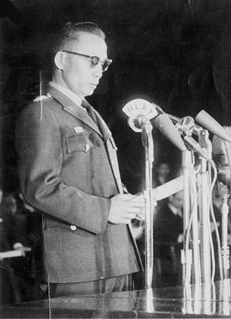
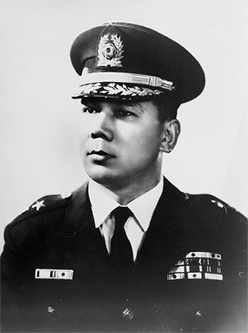

보도일 2014-09-16출처 조선일보 프리미엄조선 연재
1962년 12월 17일 국민투표가 ‘내각제 폐지와 대통령중심제 채택’ 개헌안을 찬성했다. 1963년은 새해 벽두부터 ‘정치의 계절’이 열릴 수밖에 없었다. 그해 8월 15일에 제3공화국 대통령 선거일을 10월 15일로 결정한 데 이어 8월 30일에 박정희가 대장으로 예편한 때까지, 정치 무대가 늘 혼란스러운 가운데 군복을 벗은 그는 곧 공화당 대통령 후보로 추대된다.
박정희의 민정 참여냐 불참이냐. 63년 3월 30일부터 박정희, 윤보선, 허정이 사흘 연속으로 청와대에서 담판을 벌였다. 박정희의 뒤에는 군부가 있고, 윤보선과 허정의 뒤에는 야당세력과 미국이 있었다. 정구영(공화당 총재)이 윤보선, 허정과 막후협상을 벌였다. 박정희의 ‘민정불참 선언’(2월 27일)과 ‘4년간 군정연장 성명’(3월 16일)을 상쇄시켜 털어버리고 민정이양 기한을 그해 8월 15일에서 연말까지로 연기하자는 데 합의를 했다.

그 절충안을 놓고 박정희는 박태준, 유양수, 유병현 최고위원, 김재춘 정보부장과 둘러앉았다. 그들은 민간 정치인들도 참여시키는 군민(軍民) 합작 정당을 만들어야 한다는 의견을 개진했다. 곧 검토와 준비에 돌입했다. 최고회의의 박태준, 유양수, 유병현, 정보부장 김재춘, 공화당의 박준규, 김재순, 민정당의 김용성, 이상신 등이 한자리에 둘러앉았다. 결국 공화당은 유지하게 되었다.
혁명주체 세력의 민정 참여와 박정희의 대선 출마가 기정사실로 굳어졌으니 굳이 새 정당까지 만들 필요는 없었다. 공화당에 애착이 강한 김종필을 달래는 방법이기도 했다.
어느덧 박태준은 ‘박정희와 박태준의 관계’에서 제2막을 맞이하고 있었다. 1948년 태릉에서 처음 얼굴을 익힌 ‘박정희와 박태준의 관계’에서 서막(序幕)이 완결된 것은 1960년 부산 군수기지사령부 사령관과 인사참모로서 ‘거사’의 확고부동한 동지적 인연을 맺고 헤어진 지점이었다. 제1막은 국가재건최고회의 의장과 비서실장에서 출발하여 박정희가 박태준을 경제 방면에 재배치함에 따라 그가 상공담당 최고위원으로서 맹렬히 활약한 무대였다.
제2막이 준비되고 있는 1963년 광복절 무렵, 박태준은 권좌에서 멀어지는 방향을 바라보는 중이었다. 그는 미국 유학을 생각했다. 청년시절에 전쟁하느라 제대로 해보지 못한 공부에 뒤늦게 덤벼들고 싶었다. 민정 이양에서 대통령선거 결정에 이르기까지 군복을 입고 체험한 ‘정치’라는 동네가 당최 체질에 맞지 않다는 자기진단도 명확히 하고 있었다.
박정희가 박태준의 진로를 걱정하여 그를 장충동 의장 공관으로 부른 때는 1963년 9월 초였다. 대통령선거일을 달포 남짓 앞두어서 정치권이 긴장에 돌입한 때였지만, 두 사람은 오랜만에 푸근한 자리를 누리며 속내를 털어놓았다.
“나는 임자를 놓기 싫은데, 임자는 요즘 자꾸 멀어지려는 것 같아. 앞날의 계획은 세웠나? 군으로 복귀할 건가?”
박태준은 담백하게 답했다.
“이제 군 복귀는 불가능합니다. 제가 군 복귀를 원하는 것은 도리에 어긋나고, 제가 원한다 해도 돌아갈 수 없게 되었습니다.”
“그게 무슨 소리야?”
국군최고통수권자이기도 한 박정희가 의아한 눈빛으로 되물었다.
“저는 이미 순수한 군인정신을 상실한 사람입니다. 동료들이나 후배들이 훈련장에서 땀 흘리는 동안 저는 밖에 나와 최고위원이랍시고 권력의 단물을 마셨습니다. 그런데 지금 와서 군으로 복귀해 동료들의 자리를 차지하게 되면, 저는 나쁜 놈이 되고 군에는 새로운 불만이 일어나지 않겠습니까?”
박정희는 잠시 침묵했다.
“그러면?”
“미국 유학 갈 준비를 하겠습니다.”
박태준에게는 ‘부디 군으로 돌아가라’고 권유하는 선배가 또 있었다. 이탈리아 대사 이종찬이었다. 민정이양에 대한 일정이 발표된 즈음 그에게 당도한 이탈리아의 편지에 그 목소리가 담겨 있었다. 존경하는 선배의 과분한 기대와 배려에 후배는 가슴이 뭉클했으나 최고 권력의 스승에게 당당히 밝힌 대로 그는 ‘군으로 돌아갈 수 없다는 양심과 뜻’을 바꿀 수가 없었다.
그날 박정희는 박태준에게 얼핏 국회의원 출마를 권유할 것 같은 내색을 비쳤다. 박태준은 정식으로 탁자에 올린 화제가 아니어서 면전에서 즉각 거부의사를 밝히진 않았으나 집으로 돌아와 아내에게 걱정스레 털어놓았다.
“고향에서 국회의원으로 출마한다? 나는 정치가 생리에 안 맞아. 다음에는 정식으로 권유를 하실 것 같은데, 사양이든 반대든 나도 말할 근거는 있어야 하니, 당신이 고향에 한번 다녀오면 어떻겠소?”

이리하여 박태준의 아내(장옥자)는 일종의 여론 청취 차원에서 오랜만에 부산 기장으로 내려가 친인척들을 광범위하게 만났다. 상공담당 최고위원 박태준. 인지도가 높고 그만큼 여론도 좋았다. 출마하면 앞으로 몇 선은 걱정하지 않아도 될 것 같았다. 그런데 기차를 타고 서울로 돌아오는 여행가방 안에는 육법전서만큼 두터운 서류들도 들어 있었다. 모두가 청탁 받은 이력서였다. 아내가 내놓은 서류뭉치를 바라보며 그가 담담히 말했다.
“그거 잘 됐소.”
박태준을 다시 장충동 공관으로 불러들인 박정희는 모종의 결심을 세운 표정이었다.
“군으로 돌아가지 않겠다는 생각에 변함없는가?”
“예, 그렇습니다.”
“미국 유학을 가겠다고?”
“예.”
직선적 질문에 박태준은 명쾌히 답했다.
“임자, 왜 그러나? 나를 도와줘. 군으로는 복귀하지 않겠다고 하니까 나와 함께 정치에 뛰어들기로 해. 지난번에 생각을 하다가 조사를 시켜 봤어. 우선 다가오는 총선에 우리 당 후보로 출마해. 고향에 출마한다면 당선에 아무 문제도 없어.”
이렇게 ‘박정희와 박태준의 관계’에 제2막이 서서히 오르고 있었다. 박정희의 명령에 가까운 제안을 박태준이 매력적으로 받아들이거나 마지못해 순종한다면 앞으로는 ‘고위권력층의 통속적 역학관계’로 나아갈 수밖에 없을 것이다. 그러한 길로 진입하느냐, ‘경제부흥의 창조적 역학관계’의 길로 진입하느냐. 그날 그 자리는 박정희도 박태준도 상상하지 못하는 갈림길이었다. 박태준에게는 개인적으로도 엄중한 자리였다. 최고권력자로부터 스스로 멀어지느냐, 최고권력자에게 스스로 다가서느냐. 자신의 미래를 거는 선택이었다.
그 중대한 선택권은 막 예편한 국군최고통수권자 앞에 앉은 현역 육군 준장의 의지에 맡겨졌다. 여기서 박태준은 성품대로 말했다.
“배려에 대해선 진심으로 감사드립니다. 하지만 저를 누구보다 잘 아시지 않습니까? 지난 3년 동안 정치를 봐왔습니다만, 석연치 않은 점이 너무 많았습니다. 한마디로 불합리의 종합판 같았습니다.
특히 정치인은 살아남으려면 무조건 당의 결정에 따라야 하지 않습니까? 저는 당이 결정해도 옳지 않다고 생각하면 번번이 반대할 놈인데, 그런 일이 자꾸 생기면 각하께서 얼마나 불편해지시겠습니까? 더구나 이번에 애들 엄마가 모처럼 고향에 다녀왔는데, 출마도 하기 전에 청탁서가 육법전서보다 더 두텁게 모였습니다. 그것을 들어주자면 어떻게 해야 하겠습니까? 저를 골치 아픈 말썽꾸러기로 만들지 마십시오.”
“그 못 말리는 성미를 내가 이기려고 덤벼드는 꼴이군.”
“제 앞날에 대해선, 저놈이 공부할 욕심이 있구나 하고 봐주십시오. 대선에서 승리하는 일이 급선무 아닙니까? 열심히 도와드리고 유학 떠나겠습니다.”
정치의 길로 나서지 않겠다는 박태준의 결심은 확고했다.